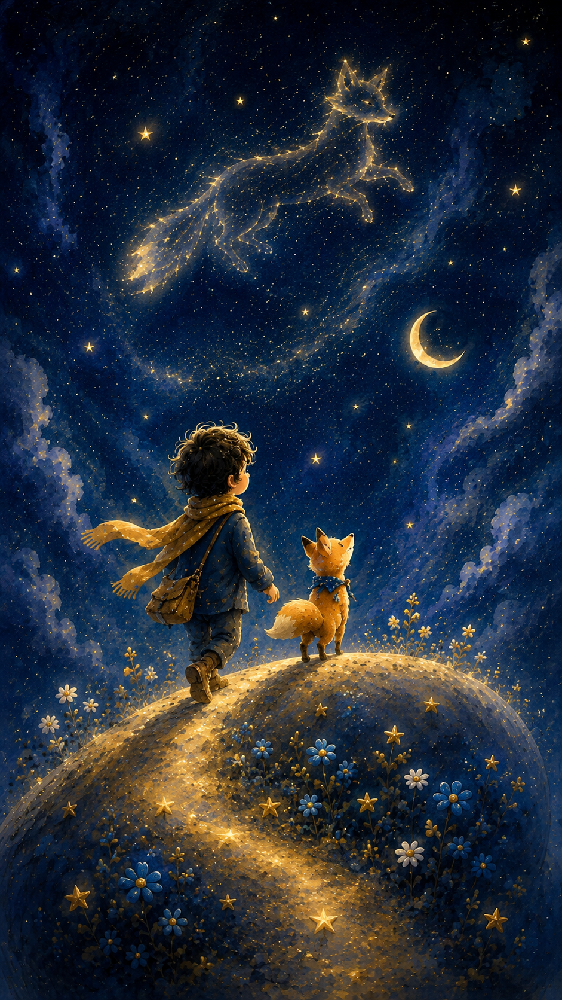
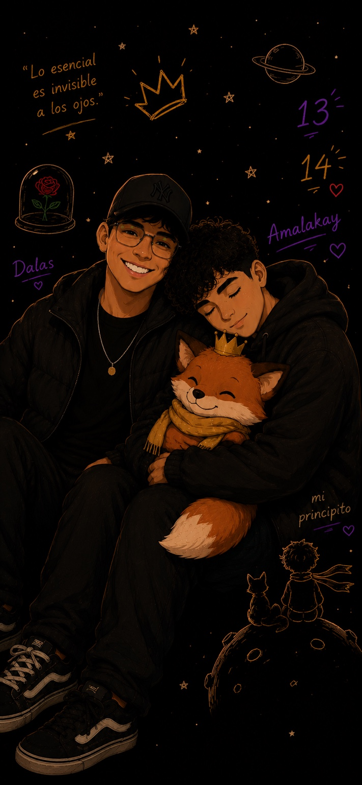
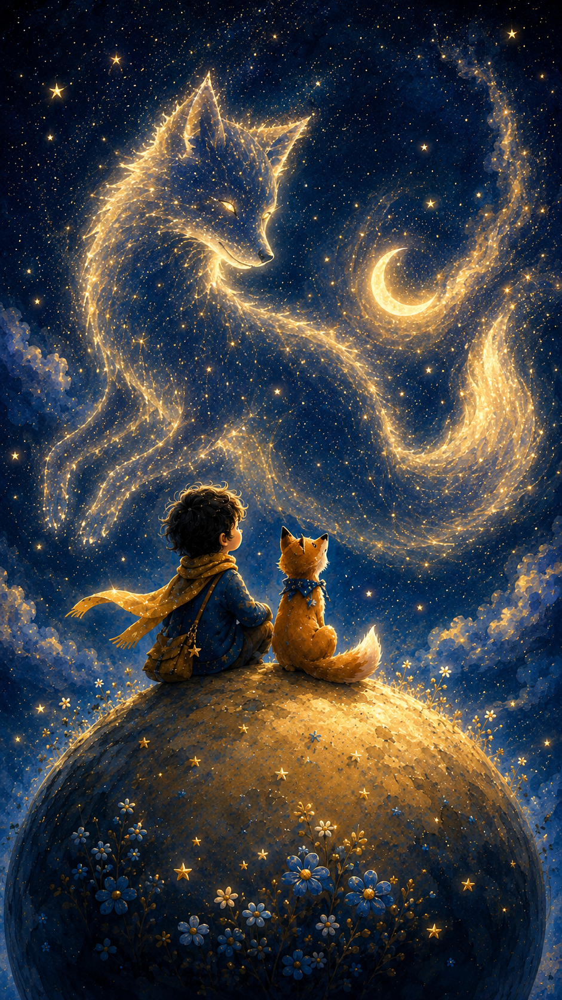
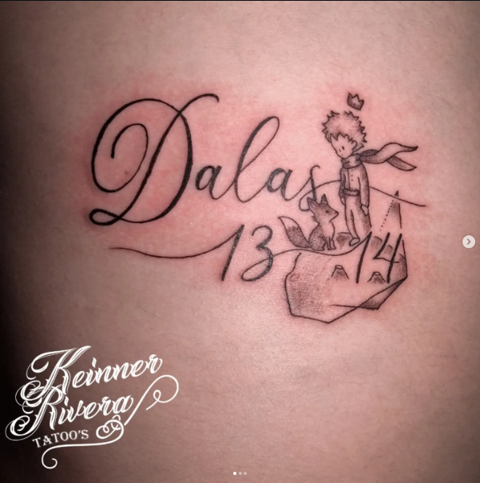

Esta no es solamente una página. Es una pequeña colección de todo lo que todavía conservo de nosotros: mensajes, fotos, videos, recuerdos, dibujos, apodos y momentos que empezaron mucho antes de los archivos que aún tengo.
Sí, me gustaría que fueras algo más. También sé que eres hetero y lo respeto. Nada de esto intenta cambiarte; solo quería guardar de una forma bonita lo importante que eres para mí.
Nuestro archivo visual
Fotos y videos
No es una carpeta de WhatsApp. Es una selección de momentos que sí vale la pena volver a mirar.
0fotos
0videos
0recuerdos
Recuerdo destacadoUn momento guardado
⌕
Mostrando recuerdos
Galería
Momentos guardados
✦
No encontré recuerdos con ese filtro
Prueba con otra búsqueda o vuelve a mostrar todo.
Lo que guardé para dedicarte
Dedicatorias
Aquí están las fotos y videos que descargué, guardé o hice pensando en ti. Algunas sí te las envié. Otras no. Pero todas terminaron aquí porque en algún momento sentí que eran para ti.
También acomodé y normalicé varias para que se vieran mejor en la página.
0fotos
0videos
0detalles
Para mi príncipeAlgo que guardé para ti
⌕
Archivo especial
Lo que alguna vez quise dedicarte
✦
No encontré nada con ese filtro
Prueba con otro tipo o con otra búsqueda.
Lo que sí se quedó
Conversaciones importantes
Ahora sí está mucho más completo: apodos, “te quiero”, buenos días, buenas noches, preocupación, apoyo, orgullo y esas frases que probablemente ni recordábamos que estaban ahí.
Mucho antes del sitio
Una historia incompleta, pero nuestra.
No tengo los primeros mensajes. Por eso esta línea de tiempo no pretende decir cuándo comenzó todo; solo reúne las partes que todavía puedo demostrar y las que se quedaron conmigo.

Seguir caminando
Con días buenos, días raros y un montón de “¿ya comiste?”

Dalas
Cuando un recuerdo se volvió símbolo.
El zorro, el niño, la coronita, las estrellas y todo lo que fui creando terminaron guardando una parte de lo que siento por ti. No porque una historia dibujada pueda definirnos, sino porque a veces una imagen explica cosas que uno no sabe decir.
Dalas puede representar cariño, aprendizaje, cercanía y también esa parte melancólica de querer a alguien sabiendo que no necesariamente puede quererte de la misma forma.

Y aun así
“Vamos a salir adelante los dos.”
Palabras que quedaron guardadas
Cartas para mi príncipe.
Hay cosas que uno escribe en momentos distintos de la vida. No todas nacieron desde el mismo lugar, pero todas fueron sinceras cuando las escribí.
Para leer con calma
Una carta de tu niño.
Toca el sobre.
Príncipe:
Probablemente ya te he dicho muchas de estas cosas de mil formas distintas, porque si algo queda claro viendo nuestros mensajes es que soy incapaz de quedarme callado contigo jajaja.
Te he dicho que te quiero cuando estoy feliz contigo, cuando me sacas el malgenio, cuando estás bien y especialmente cuando sé que no lo estás. Y después de todo este tiempo sigo pensando lo mismo: quiero verte bien.
Pero también quiero ser sincero contigo en algo. No voy a fingir que nunca he querido algo más, porque sabes perfectamente que sí. Si las cosas fueran diferentes y tú sintieras lo mismo, probablemente te escogería sin pensarlo demasiado. Me gustaría poder llamarte mi novio además de mi príncipe.
Pero también sé que eres hetero. Y respeto eso.
No hice esto para intentar cambiarte, convencerte, hacerte sentir culpable ni hacerte creer que me debes una oportunidad. No quiero que mi cariño se convierta en una presión para ti.
A veces puede doler querer a alguien de una forma que esa persona no puede devolverte, pero eso no borra todo lo bonito que sí existe. Sigues siendo mi amigo. Sigues siendo alguien a quien quiero muchísimo. Y prefiero tenerte en mi vida desde un lugar real que perderte intentando convertir esto en algo que no puedes sentir.
No sé dónde va a estar cada uno dentro de unos años. Solo sé que conocerte dejó cosas muy bonitas en mí.
Tal vez no conserve nuestro primer mensaje. Tal vez se hayan perdido un montón de conversaciones. Pero entre todo lo que sí quedó hay dos palabras que terminaron diciendo muchísimo: mi niño y mi príncipe.
Y aunque a veces mi corazón quisiera poder llamarte de otra forma, nunca quiero que olvides que también valoro muchísimo poder llamarte mi amigo.
Gracias por dejarme ser tu niño.
Te quiero muchísimo, príncipe. — Tu niño 🤍
Brasil · una carta de despedida
La carta que te escribí cuando me vine.
Esta carta pertenece a ese momento exacto. La dejo aquí como la escribí, porque también forma parte de nuestra historia y de todo lo que sentía antes de irme.
✦ · ☾ · ✦
Amor de mi vida:
No sé ni cómo empezar esta carta, porque nunca imaginé que algún día tendría que escribirte una. Hay personas que llegan para quedarse un momento, y hay otras que llegan para cambiarte la vida… tú fuiste eso para mí. Fuiste hogar, calma, alegría y también el lugar donde aprendí a amar de verdad.
Dicen que las personas pasan por nuestra vida por alguna razón, y sé que tú tuviste un propósito en la mía: enseñarme a amar de verdad, incluso cuando amar también dolía.
Me aferré a la idea de que siempre estaría para ti y que nunca me iría de tu lado. No te voy a mentir, siempre me imaginé haciendo una vida contigo. Tal vez me apresuré al pensar que así sería, pero créeme que, desde que te conocí, mi intención siempre fue que fueras mi último amor.
Gracias por cada conversación hasta tarde, por cada “mi niño”, por cada “mi Niko”, por preocuparte cuando me sentía mal y por dejarme preocuparme por ti también. Gracias por permitirme cuidarte, aunque fuera un poquito. Nunca voy a olvidar las veces que solo quería saber si ya habías comido, si te habías tomado las pastillas, si estabas descansando o si habías llegado bien a casa. Puede sonar pequeño, pero para mí eso era amar.
Nunca voy a olvidar tu voz, tu manera de hablarme, tus mensajes llenos de errores ortográficos que tanto molestaba jugando, ni tampoco la forma en que lograste convertirte en parte de mis días sin siquiera darme cuenta.
Muchas veces ambos dijimos e hicimos cosas que nos lastimaron, algunas veces sin querer y otras desde el dolor. Yo también tuve miedo, inseguridades y momentos donde sentía que no era prioridad para ti, aunque en el fondo entendiera todo lo que cargabas encima. Y, aun así, nunca pude dejar de escogerte.
Porque incluso cuando estábamos mal, yo seguía pensando en ti apenas despertaba. Seguía queriendo verte, aunque fueran cinco minutos. Seguía buscando cómo ayudarte incluso cuando yo tampoco estaba bien. Y no me arrepiento de nada de eso.
Desde el inicio hubo una conexión especial e inigualable que, al menos de mi parte, no creo volver a encontrar en otra persona. Tú llegaste a una parte de mí donde casi nadie había llegado.
Me duele aceptar que a veces amar no es suficiente para quedarse. Y aunque quisiera detener el tiempo y volver a tantos momentos contigo, entiendo que hay despedidas que llegan incluso cuando el corazón no está listo. Créeme que, si pudiera elegir, te seguiría escogiendo a ti una y otra vez.
Nunca quise que nuestro vínculo llegara a su fin. Siempre, y tú lo sabes, te amé de verdad.
Agradezco cada momento que compartiste conmigo, cada palabra, cada abrazo y cada parte de ti que dejaste en mi vida. Y aunque hoy me toque soltarte, quiero que sepas que contigo también se va un pedazo de mi alma.
Quiero que sepas que jamás fuiste un error en mi vida. Al contrario, fuiste de las cosas más bonitas que me han pasado. Gracias por enseñarme que todavía existían personas capaces de hacer sentir tanto con tan solo existir.
Ojalá la vida te abrace bonito. Ojalá cumplas todos tus sueños, que sonrías mucho y que alguien te cuide siempre cuando yo ya no pueda hacerlo. Y si algún día piensas en mí, espero que sea con cariño, porque yo voy a recordarte como el amor más grande que tuve.
Te amé más de lo que supe demostrar.
Y probablemente te voy a extrañar más de lo que puedo explicar.
Y como último acto de amor hacia ti, no quiero que me pagues nada de lo que me debes. No te voy a aceptar ni un peso, porque todo lo que hice por ti lo hice desde el amor y nunca esperando algo a cambio.
Quédate con eso tranquilo. Si alguna vez te ayudé, cuidé de ti o estuve para ti, créeme que jamás me voy a arrepentir. Para mí siempre valió la pena haberte amado.
Ese será mi último regalo para ti… dejarte ir sin deberme nada, excepto el recuerdo de todo lo que vivimos.
Y aunque esta despedida me rompa por dentro, prefiero quedarme con todo lo bonito que vivimos antes que convertir el amor que te tengo en recuerdos llenos de rencor. Nunca voy a hablar mal de ti, porque incluso en nuestros peores momentos seguías siendo la persona que más quería cuidar.
Tal vez en otra vida, en otro tiempo o en otras circunstancias, nos habría ido diferente. Me gusta pensar que existió un universo donde sí pudimos quedarnos juntos, donde todo salió bien y donde nunca tuvimos que decirnos adiós.
Quiero que seas feliz, incluso si esa felicidad ya no me incluye a mí. Porque amar también es aprender a soltar cuando el corazón entiende que insistir solo termina destruyendo lo que un día fue hermoso.
Y si algún día vuelves a leer esta carta, quiero que recuerdes algo: hubo alguien que te amó con todo lo que tenía, incluso cuando no sabía cómo hacerlo perfectamente.
Hubo alguien que habría hecho cualquier cosa por verte sonreír, alguien que siempre iba a contestarte, aunque estuviera destruido por dentro, alguien que incluso en sus peores días encontraba paz escuchando tu voz.
Y hay algo que probablemente nunca te dije por completo… yo sí quería pasar este último tiempo contigo. Aunque fuera un solo día. Un último día donde pudiéramos estar tranquilos, solos tú y yo, sin problemas, sin interrupciones, sin el mundo cayéndose encima de nosotros. Solo quería abrazarte una vez más sin sentir que el tiempo nos estaba persiguiendo.
Quería verte, escucharte hablar de cualquier cosa, molestarte por tus errores al escribir, recostarme contigo y sentir, aunque fuera por unas horas, que todavía existíamos de la forma en que alguna vez fuimos felices.
También me duele pensar en todas las cosas que no alcanzamos a hacer. Nunca visitamos esos pueblitos que decíamos conocer juntos. Nunca pasamos noches enteras jugando en la play como queríamos. Nunca vimos todas esas películas que prometimos ver. Nunca tuvimos ese montón de pequeños momentos simples que yo imaginaba contigo y que, para mí, habrían significado el mundo entero.
Y aunque nunca te lo dije directamente, muchas veces me quedé esperando un mensaje tuyo diciendo “¿estás en tu casa? te quiero ir a ver” o un “ya estoy afuera, sal”. Me imaginaba tantas veces ese momento… abrir la puerta y encontrarte ahí, aunque fuera solo unos minutos.
Pero en el fondo creo que siempre supe que eso no iba a pasar.
Y aun así seguía esperando.
Porque una parte de mí nunca dejó de ilusionarse contigo, nunca dejó de querer un último momento real a tu lado. Uno donde pudiéramos olvidarnos, aunque fuera un rato de todo lo malo y simplemente volver a ser nosotros… (Aunque no hubiera un nosotros).
Y ahora siento que simplemente… se nos acabó el tiempo.
Poco a poco fui desistiendo de la idea de pedirte vernos. Veía tu horario tan pesado, todos los problemas que cargabas, todo el cansancio que llevabas encima… y no quise convertirme en otra preocupación más para ti. Me dolió muchísimo quedarme callado y hacerme a la idea de que tal vez nunca iba a tener ese último momento contigo que tanto soñaba.
Y creo que eso es lo que más me rompe el alma… irme así.
Irme con tantas ganas de haberte abrazado una última vez. Con tantas cosas que todavía quería vivir contigo, aunque fuera por un instante más. Porque, aunque intenté hacerme fuerte, una parte de mí todavía seguía esperando que aparecieras y me dijeras que me quedara un poquito más a tu lado.
Y, aun así, después de todo, no quiero desaparecer completamente de tu vida. No te voy a bloquear ni cerrarte la puerta de mí, porque, sigues siendo alguien demasiado importante para mí.
Si algún día necesitas ayuda, si algún día te sientes solo, si necesitas hablar con alguien o simplemente quieres encontrar un amigo en medio del caos… siempre puedes contar conmigo. No importa si estoy lejos, si estoy en otro país o si la vida nos llevó por caminos distintos. Si algún día me necesitas, yo voy a estar ahí para ti.
Porque hay amores que no terminan cuando las personas se alejan… hay amores que se quedan viviendo dentro de uno, respirando bajito entre los recuerdos, en las canciones, en las noches difíciles y en todo aquello que alguna vez nos hizo sentir vivos. Y tú… tú te quedaste en mí de una forma que ya no tiene regreso.
A veces siento que terminamos convirtiéndonos en eso que todavía no he sido capaz de dedicarte completamente… “The One That Got Away”.
Y creo que esa canción me duele tanto porque, en el fondo, tengo miedo de que te conviertas en eso para mí. En la persona que amaré toda mi vida, aunque ya no esté. En ese amor que uno recuerda incluso años después, preguntándose qué habría pasado si las cosas hubieran sido diferentes.
Quería dedicarte esa canción porque hay partes de ella que se sienten demasiado parecidas a nosotros. A todo lo que no alcanzamos a vivir. A todos los planes que se quedaron suspendidos en el tiempo. Y porque, aunque nunca te lo dije directamente, una parte de mí siempre creyó que tú eras esa persona con la que quería quedarme hasta el final.
Y tal vez por eso también alguna vez te dediqué “Te juro no te miento”, porque no había canción que explicara mejor todo lo que sentía por ti. Porque de verdad te juro que contigo imaginé todo. Un futuro, una vida, un hogar, viajes, noches juntos, despertar contigo, envejecer contigo… incluso en los momentos donde parecía imposible, yo seguía soñándonos.
Nunca fue mentira lo que sentí por ti. Nunca fue algo pasajero.
Nunca fuiste alguien más.
Fuiste tú… siempre tú.
Supongo que por eso me duele tanto soltarte… porque no siento que esté perdiendo solo a alguien que amo. Siento que estoy dejando ir a la persona con la que imaginé una vida entera.
Siempre voy a llevarte conmigo. No solo en mi memoria ni en mi corazón… también en mi piel. Me hice un tatuaje que dice “Dalas”, la mezcla de nuestros nombres, acompañado de un principito. Y no sabes cuánto me dolió y me alivió al mismo tiempo hacerlo, porque entendí que, aunque el mundo nos separara, yo nunca iba a dejar de sentirte parte de mí.
Quizás algún día alguien vea ese tatuaje y no entienda lo que significa. Pero yo sí lo voy a saber. Voy a saber que ahí quedó una parte del amor más sincero que he sentido en mi vida. Ahí quedó la historia de un niño que llegó a cambiarme el alma sin darse cuenta.
Y como siempre te digo… ojalá algún día encuentres a alguien mejor que yo. Alguien que te ame muchísimo más de lo que yo pude hacerlo, que te cuide mejor, que tenga la capacidad de darte toda la tranquilidad y felicidad que mereces.
Ojalá encuentres a alguien que de verdad te guste con la misma intensidad con la que yo te quise a ti. Alguien que haga hasta lo imposible por verte feliz, que te abrace en tus peores días, que se quede incluso cuando todo se vuelva difícil y que nunca te haga sentir solo.
Y sí… incluso así me digas que ya no crees en el amor.
Porque yo sí creo que algún día alguien va a llegar a tu vida y va a demostrarte que todavía existen amores bonitos, tranquilos y sinceros. Alguien que te haga sentir amado de la manera correcta, sin dolor, sin miedo y sin tantas heridas de por medio.
Porque si algo tengo claro, es que tú nunca mereciste recibir lo mínimo de nadie.
Mereces un amor bonito, uno sincero, uno que te cuide el corazón con delicadeza. Mereces lo mejor de este mundo y muchísimo más.
Y aunque me rompa un poco pensar que quizás algún día será otra persona quien te dé todo eso… aun así espero que la vida te regale exactamente el amor que siempre soñaste.
Porque para el mundo podrás ser muchas cosas… pero para mí siempre vas a ser mi principito adorado.
Y creo que eso es lo más triste de todo… entender que, incluso aprendiendo a soltarte, nunca voy a dejar de pertenecerte un poquito.
Adiós, mi principito… recuerda que estás hecho para conquistar el mundo…
Espero que te guste 😊

Una parte de esta historia que también quedó en mi piel.
Hubiera querido que fueras tú la persona que se quedara conmigo al final de todo.
Y creo que eso es lo que más me duele… aceptar que tenía tantos planes contigo, mientras la vida poco a poco nos iba alejando sin que pudiéramos detenerlo.
Porque aunque trate de hacerme el fuerte, la verdad es que yo sí te veía en mi futuro. Sí te imaginaba en mi vida por muchísimo tiempo más.
Pero supongo que no todos los amores que se sienten como hogar terminan convirtiéndose en un lugar donde uno puede quedarse para siempre.
Y te voy a extrañar muchísimo… más de lo que probablemente imaginas.
Así como te extrañé todos estos meses donde te sentí tan ausente, tan lejos de mí, incluso cuando todavía seguíamos hablando. Extrañaba al niño que me hablaba bonito, al que me buscaba, al que me hacía sentir querido aunque fuera con cosas pequeñas.
Extrañaba a mi príncipe.
Y perdón si alguna vez te hice sentir presionado por querer pasar más tiempo contigo o por querer sentirte más cerca. La verdad es que nunca fue por molestarte… era solo que te amaba demasiado y me estaba costando aceptar que poco a poco te sentía irte de mis manos.
Creo que una parte de mí llevaba tiempo sintiendo esta despedida, pero mi corazón nunca quiso aceptarla del todo.
Porque incluso ahora, incluso escribiendo todo esto… todavía hay una parte de mí que quisiera quedarse contigo.
— Guardada desde aquel momento 🇧🇷
Tu rincón secreto · cambia todos los días
Hay algo nuevo para ti cada día ✨
Esta parte de la página está hecha especialmente para que puedas volver. Todos los días aparece algo diferente para ti: a veces será un recuerdo de nuestros chats, otras un “te quiero”, un regaño para que comas, algo sobre Dalas, una tontería nuestra o simplemente algo que quiero que recuerdes ese día.
No tienes que avisarme cuando entres ni responder nada. Es tu pequeño rincón. Solo vuelve cuando quieras descubrir qué te tocó hoy.
Hay 125 secretos distintos guardados para ti · uno cambia cada día
🔒
Hay algo para ti hoy
Solo se puede descubrir una vez que lo toques.
— tu niño 🤍
☾
Dato importante: el secreto se calcula con la fecha del dispositivo, así que cambia automáticamente al comenzar un nuevo día.
Y porque uno solo no era suficiente
Pequeños secretos permanentes.
¿En serio? 🙄
Te dije que no lo tocaras.
Te quiero muchísimo, príncipe.
No eres una carga. Si alguna vez te ayudo es porque quiero hacerlo, no porque me toque.
Si te caes, te ayudo a levantarte. Después seguimos caminando.
La primera vez que lo encuentro guardado fue el 6 de noviembre de 2025. Y terminó quedándose.
Unos días después apareció mi forma de llamarte a ti. Ya sabes que tampoco se fue.
No sé qué vaya a cambiar con los años. Pero sí sé que fuiste alguien demasiado importante en esta etapa de mi vida.